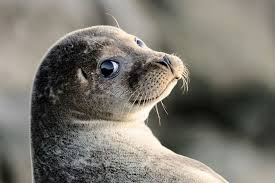

О тюленях
Обыкновенный тюле́нь — представитель семейства настоящих тюленей. Распространены циркумполярно и встречаются во всех морях, примыкающих к Северному Ледовитому океану. Два подвида находятся в Красной книге. Заселяют прибрежные воды Атлантического и Тихого океанов, а также Балтийского и Северного морей.